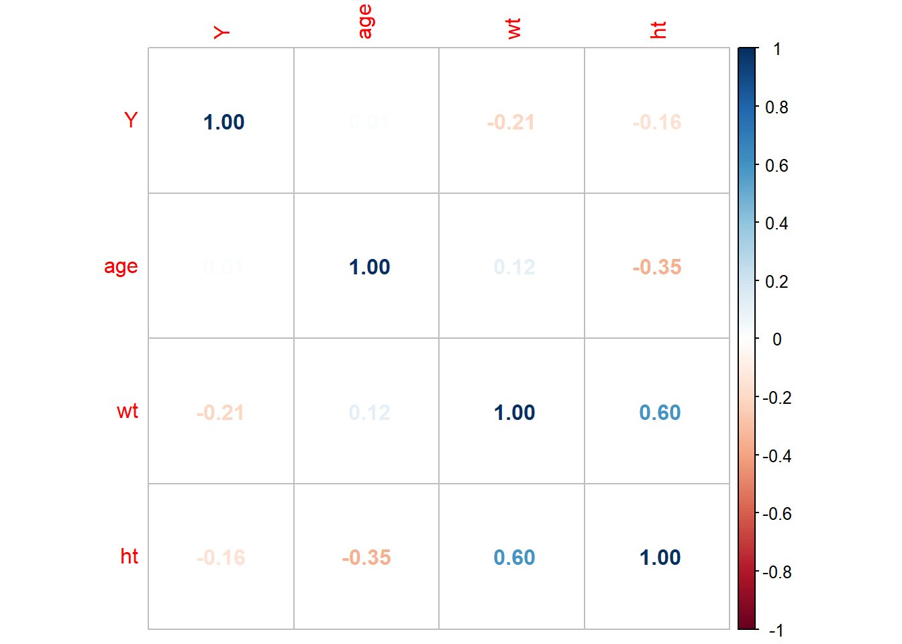

# load data dat <-readRDS(here::here("fitting-exercise/data/mavoglurant-processed.rds"))## make sex and race numericdat$sex <-as.numeric(dat$sex)dat$race <-as.numeric(dat$race)
Data processing
To find out what the values used to encode race stand for, I searched the provided manuscript. In the Clinical data subsection of Methods, the authors write “The IV data used to optimize the disposition model (Study 1) were previously described by Wendling et al”. I opened the article that was referenced and located the Table 1 which described the data. The data that we are using is called, in this reference, Study A2121. The race variable distribution is reported as Caucasian (61.7), Black (30), Native American (1.7) and Other (6.7). We can cross-reference these percentages with our data (see below) and see that 1=Caucasian, 2=Black, 7=Native American, and 88=Other.
prop.table(table(x=dat$race))
x
1 2 3 4
0.61666667 0.30000000 0.01666667 0.06666667
# combine categories 7 and 88 of the race variabledat$race_recode <-case_when( dat$race %in%c(7, 88) ~3,TRUE~as.numeric(dat$race))
EDA
# get continuous variablescor <-cor(dat %>%select(Y,age,wt,ht))# correlation plotcorrplot::corrplot(cor, method='number')

Feature engineering
# determine units of wt and htsummary(dat$wt)
Min. 1st Qu. Median Mean 3rd Qu. Max.
56.60 73.17 82.10 82.55 90.10 115.30
## median weight is 82.1, min is 56.6, max is 115.3## it seems logical to assume wt is measured in kg## the Table 1 of the reference mentioned previously, reports weight in ## kg with median (range) 82.8 (56.6–115.3) which matchessummary(dat$ht)
Min. 1st Qu. Median Mean 3rd Qu. Max.
1.520 1.700 1.770 1.759 1.813 1.930
## median height is 1.77, min is 1.52, max is 1.93## it seems logical to assume ht is measured in meters## the Table 1 of the reference mentioned previously does not report height,## but it does report bmi. we can compute bmi based on our confirmed weight## measurments and our assumed height measurements and see if we get similar## values for bmi# create bmi variabledat$bmi <- dat$wt / (dat$ht)^2# summarize new bmi variablesummary(dat$bmi)
Min. 1st Qu. Median Mean 3rd Qu. Max.
18.69 24.54 26.38 26.63 29.70 32.21
## the median bmi of our created variable is 26.38, min is 18.69, max is 32.21## the median (range) of the bmi variable reported in the reference Table 1 is## 26.5 (18.7–32.2). Thus, our calculation is consistent with the reference
Model building
# set seedset.seed(rdmseed)
linear model
# fit modellinear_mod <-linear_reg() %>%fit( Y ~ dose + age + sex + race_recode + bmi, data=dat )# generate predictionslinear_pred <-predict(linear_mod, new_data=dat)# merge predictions to datadat$pred_linear <- linear_pred$.pred
# get rmsedat %>%rmse(truth = Y, estimate = pred_linear)
# A tibble: 1 × 3
.metric .estimator .estimate
<chr> <chr> <dbl>
1 rmse standard 624.